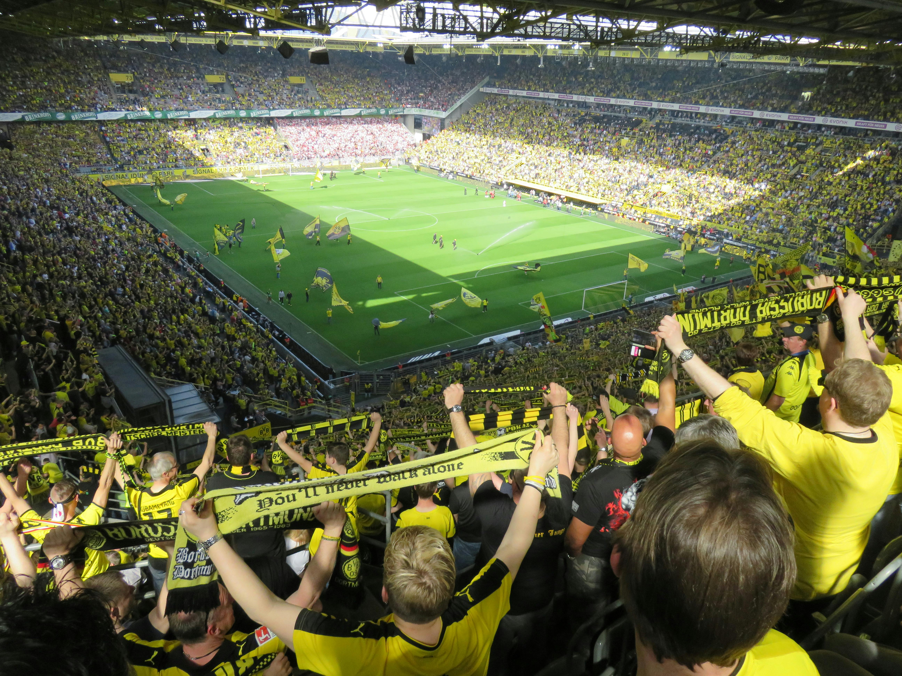
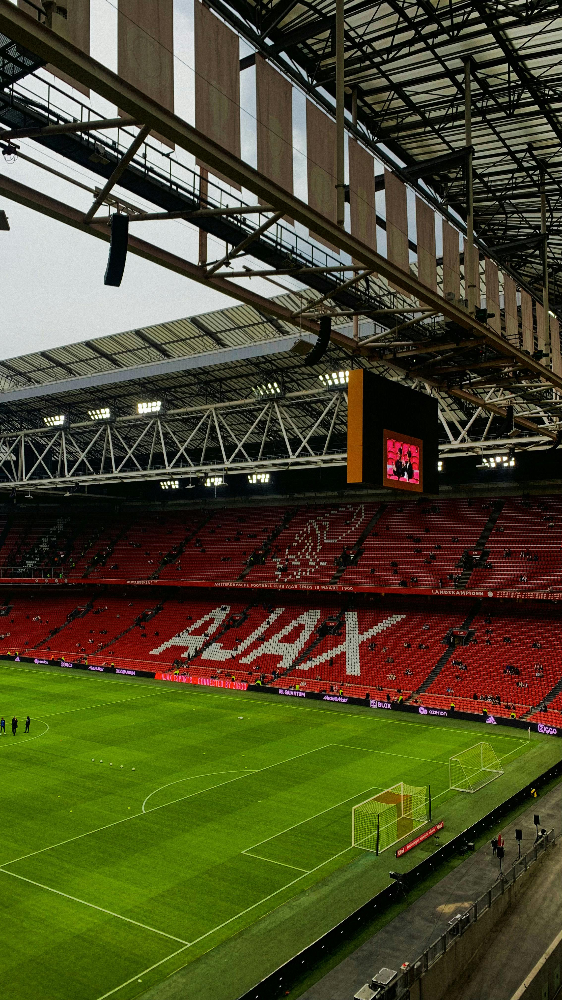

 Dortmund Weekend Stand beneath the Yellow Wall, where 80,000 voices rise in unison. Signal Iduna Park isn’t just a stadium—it’s a cathedral of football.
 Ajax Amsterdam Total football, red-and-white legacy, and echoes of Cruyff. A weekend in Amsterdam means history, style, and a seat at the Johan Cruijff ArenA.
Glasgow Football Weekend From the thunder of the Old Firm derby to grassroots grit in the East End, Glasgow lives and breathes football. Celtic Park and Ibrox aren’t just stadiums—they’re battlegrounds of pride and history.
Amsterdam Weekend Total football, red-and-white legacy, and echoes of Cruyff. A weekend in Amsterdam means history, style, and a seat at the Johan Cruijff ArenA.